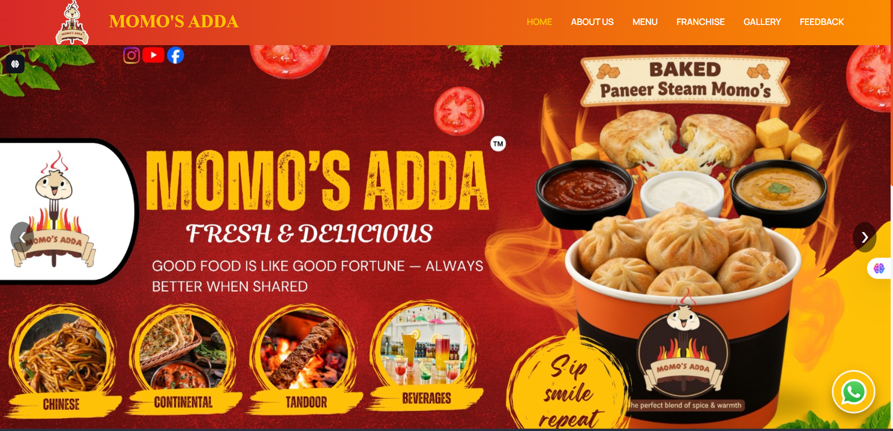
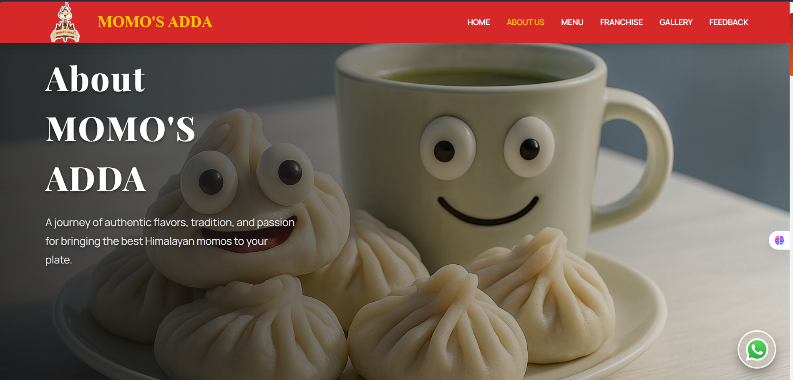
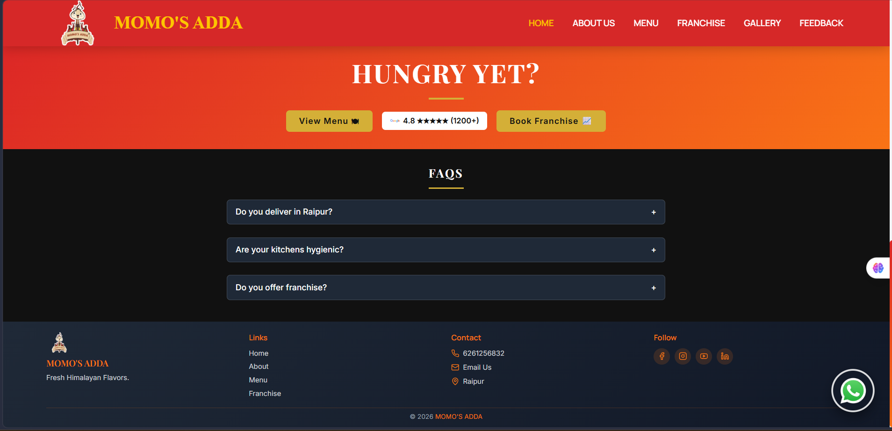

Homepage View
Main landing section with strong visual hierarchy, hero content, showing some of the menu items of the restaurant.
Momo's Adda is the official website of a Chattisgarh (Bilaspur) based food brand built to showcase its menu, company information, and franchise opportunities. The platform features responsive design, automated PDF generation, and email notifications for franchise and feedback submissions. Developed using modern web technologies, it focuses on brand presentation, user engagement, and seamless functionality across all devices. This project highlights full-stack (MERN Stack) development and business process automation.

Main landing section with strong visual hierarchy, hero content, showing some of the menu items of the restaurant.

Responsive content area designed with clean spacing, readable text, and balanced visual layout.

Crafted a high-converting call-to-action section inspired by Netflix's modern and persuasive user experience.